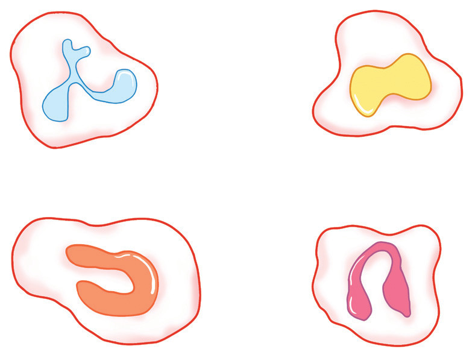
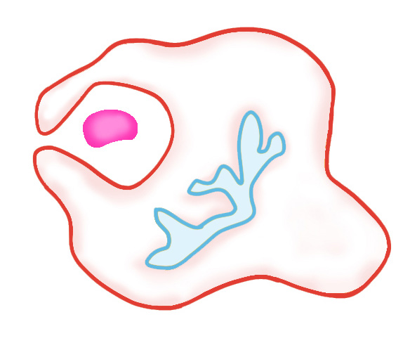
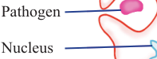

109
Student’s Book - Form Two
Biology for Secondary Schools
White blood cells
These are irregular shaped cells with nuclei as shown in Figure 5.9. They are also called leucocytes. They help the body to fight against diseases and infections. One milliliter of blood has approximately 5,000 to 10,000 white blood cells. They are produced in the white bone marrow and in the lymph nodes. White blood cells do not possess
haemoglobin. White blood cells called macrophages are capable of motility.
Their motility enables them to get into the site of infection.

(a)
(b)
(c)
(d)
Nucleus
Nucleus
Figure 5.9: White blood cells of different
shapes
Functions of white blood cells
The white blood cells protect the body against infection. They perform this function by:
(i)
engulfing and destroying pathogens,
a process called phagocytosis, as
shown in Figure 5.10;
Pathogen
Nucleus


Figure 5.10: Phagocytosis in a white blood cell
(ii) producing substances that neutralise toxins produced by
pathogens;
(iii) causing clumping together of
foreign materials in the body; and
(iv) killing infected body cells.
The effects of HIV on white blood cells
The Human Immunodeficiency Virus
(HIV) attacks a type of white blood cells called T-helper cells. These cells are essential for body immunity. When they encounter an antigen, the T-helper cells divide themselves to form new cells. This increases the number of cells available to fight the infection.
After the infection, some cells remain as memory cells to activate an immune response if the infection happens again.
In addition, the T-helper cells activate other cells in the immune system.
HIV has a protein envelope that can only bind to its receptor called
CD4. The CD4 are found on the cell membrane of the T-helper cell. When it enters the human body, HIV fuses its protein envelope with the CD4 and
08/04/2026 10:18:31